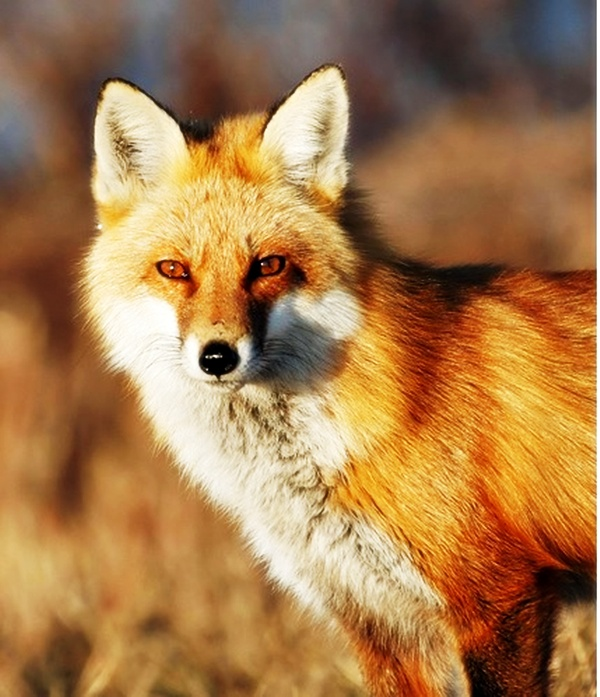

개과의 포유류로 제주 · 울릉도를 제외한 한반도 전역에 분포했으나
1980년대 이후 남한에서는 멸종해 현재 소백산에서 복원 중이다.
세계적으로 45아종으로 나뉘며 국내 아종은 우수리, 중국 동북부에 분포한다.
몸은 갈색에서 붉은색을 띠며 꼬리가 길고 두꺼우며 털이 많다.
잡식성으로 특히 설치류를 즐겨 먹고 인가 주변의 야산에 주로 서식한다.
1960~1970년대 쥐잡기 운동 때 쥐약 중독과 모피 때문에
과도하게 포획된 것이 주된 멸종 원인이다.
홈으로